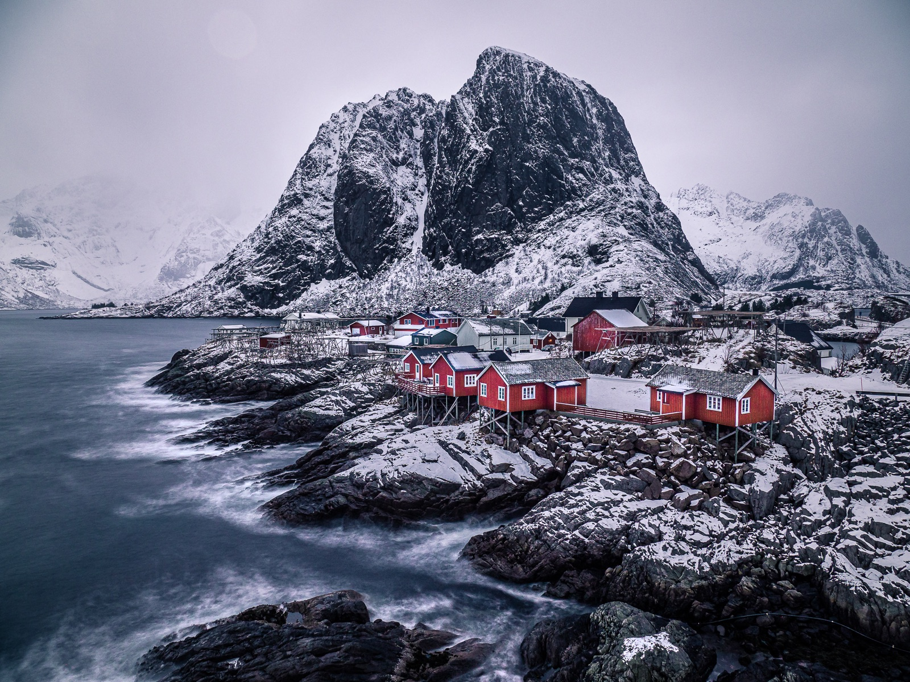

暴风雪与封路
吹雪会让能见度迅速变差，积雪可能封路。E10与冰岛南岸并非处处有可行绕路；巴士、包车、渡轮也可能停运，不能作为“必能脱困”的保障。
罗弗敦冬季出行 ↗THE NORDIC WINTER · 春节旅行
Oslo / Lofoten / Iceland
从奥斯陆的海港，走向罗弗敦的雪山海岸，
再到冰岛的瀑布、黑沙滩与冰川。

含抵达、转场和天气缓冲；机票为已选方案价格，住宿、租车及活动费用仍为估算。
国际往返¥8,895 + OSL–EVE ¥344 + EVE–OSL–KEF ¥1,369 = ¥10,608/人，6人共¥63,648。国际票每个方向含1件23kg托运；2/5截图标注行李直达。区域票托运额度、中转逐段时刻和联程保护以最终订单为准；当前为所选票价，未确认出票。
沿着地图，把14天慢慢展开。
双指或滚轮缩放 · 拖动查看 · 点击地点了解详情
虚线表示行程顺序，不作驾驶导航。住宿点为建议区域，具体房源待选。
03 / THE BUDGET
6人同行，两辆AWD SUV，每车3人。12晚住宿，部分自己做饭；以下均为人民币人均预算。
6人建议准备¥174,000，含机票及备用金。普通花费约¥22,475–30,208/人；天气备用金单列。
6人含备用金合计¥143,850–196,248（约14.4–19.6万元）。住宿、车辆和活动尚未锁价；购物、新购装备、单人单住及超出备用金的重大滞留另计。低值车辆分摊按元向上取整。
除机票外均为规划额度，非2027年实时锁价报价。费用用人民币估算，预订时按实际币种、汇率及税费复算。机票低价库存未必同时够6人。
8,895 + 344 + 1,369；6人共63,648
挪威4天×2车＋冰岛6天×2车＝20车天；650–1,050元/车天含车险预留，另加两地两车油费、停车及路费共3,600–5,400元；整队合计16,600–26,400元，人均低值向上取整
2晚奥斯陆＋4晚挪威北部＋6晚冰岛；6人整套或3间双人房共1,800–3,000元/晚，含清洁及税费预算
13个在途日期×200–300元/人；部分自炊，航班日余量用于正餐
一次冰川/冰洞＋至多一次温泉或博物馆；海鹰、骑马另加；未参加项目不花费
奥斯陆公共交通＋EVE/KEF酒店接驳，按6人分摊
国际票23kg已含；两段区域票按最终票种确认，若均已含则为0
预算额度，非官方收费报价；已有有效签证可减少
6人共9,000–15,000元，供延住、额外租车或改签；未使用不计实际花费，不保证覆盖长期滞留
冬季会影响自驾，给天气留余量很有必要。我们接受取消景点，提前回到机场一侧；四驱和备用金都不能让封闭的道路通行。以下为本次旅行的保守约定，具体出行以当地官方信息为准。
吹雪会让能见度迅速变差，积雪可能封路。E10与冰岛南岸并非处处有可行绕路；巴士、包车、渡轮也可能停运，不能作为“必能脱困”的保障。
罗弗敦冬季出行 ↗桥梁、海岸与空旷路段更需小心横风和阵风；路面看起来湿，也可能已经结冰。减速、拉开车距、避免急刹急转。四驱帮助起步，不代表冰面刹车更短；开车门要扶稳。
冰岛驾驶提示 ↗前一晚看未来48–72小时趋势，出发前核对整段路况、预警和摄像头，途中停车再复查。黄色预警也要看具体路段、时段和风向；无预警不等于没有黑冰。
挪威路况 · 挪威天气道路封闭、官方建议不要旅行、影响本路段的橙/红色风雪预警，或司机已无法稳定看清路面、控制车辆时，停止推进并在安全地点停留。黄色预警先缩短路线并询问当地人员；不把某个风速数值当通行许可证。
2/2–3优先连住Leknes，Reine作天气良好时的往返日游；2/4只返EVE。若2/4预报恶化，2/3就在道路仍安全时提前撤回。这里仍没有完整的空白日，西部是第一项可删行程。
2/6南岸、2/7冰河湖、2/8冰川后返Vík、2/9回Keflavík，2/10完整缓冲。黄金圈改为取消东南段后的替换；冰洞、温泉不固定塞进缓冲日。
6人选3卧公寓或3间双人房，核实真实床位、两车停车位、厨房、清洁费和铲雪服务。中部、冰川区优先可取消住宿，记录最晚取消的当地时间；住主路附近，少选偏远支路深处的房子。
先联系当晚房东与租车公司延住、续租，再联系活动商及航空公司。按官方开放信息重排行程，不绕未维护道路、不闯栏杆。保留警报和费用凭证；保险是否赔付及改签条件以条款为准，分开出票不自动互保。紧急危险拨112。
每车3人，核实3只托运行李箱能放下；两车各有熟悉冰雪驾驶的司机，备用司机须登记。约好停车汇合点，不紧跟车队。带保暖衣、水、食物和充电设备，油量不要见底。全员缺乏冰雪经验时，优先当地司机或缩小自驾范围。
优先AWD油车或混动；长续航四驱电车也可，但需规划冬季补能和备用站点。确认冬胎/钉胎、免赔额、玻璃碎石、沙尘火山灰、车门风损、轮胎底盘与救援条款，“全险”不等于所有损失都赔。
2/5 EVE 06:00起飞，2/11 KEF 07:25起飞。尽量前一晚还车，确认凌晨酒店接驳。分别暂按04:00、04:25到航站楼安排，按航空公司柜台与截止时间复核。
本版保留已选航班。若机票还未买且很想保留西部住宿，可另查1/31白天OSL→EVE，把罗弗敦提前一天；票价和余位需重查。若不能接受返程延误，可考虑延后一日离开冰岛，新增住宿、租车及机票差价另算。
罗弗敦收缩版：EVE → Svolvær / Henningsvær → EVE，不进入中西部；天气继续恶化则留在安全住宿地。
冰岛收缩版：KEF → Reykjavík / Selfoss → Vík（条件允许才去）→ Keflavík。取消冰河湖、东部住宿与冰洞；黄金圈或室内活动只在所在区域安全时替换。
缓冲的边界：一整天余量可以吸收部分延误，不能覆盖每一次持续暴风。道路仍封闭时，接受延住与改签，不为了机票冒险出发。现在无法预测2027年2月具体哪天有暴风雪。